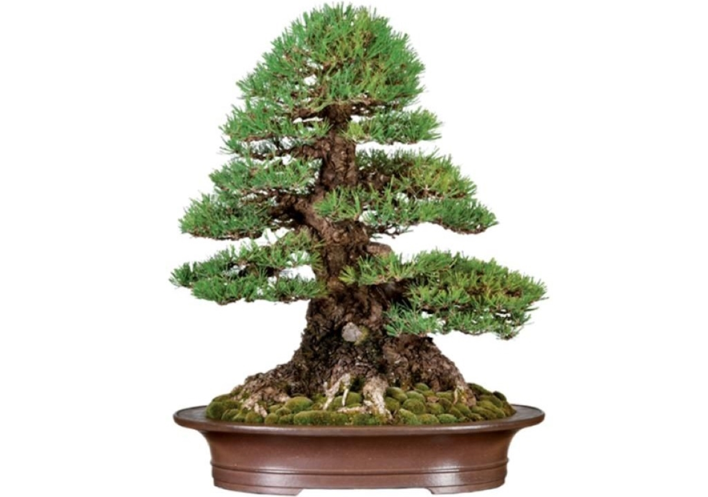
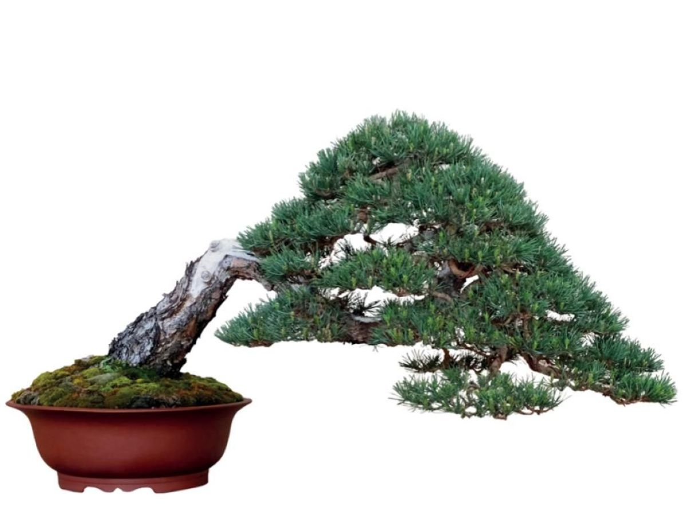
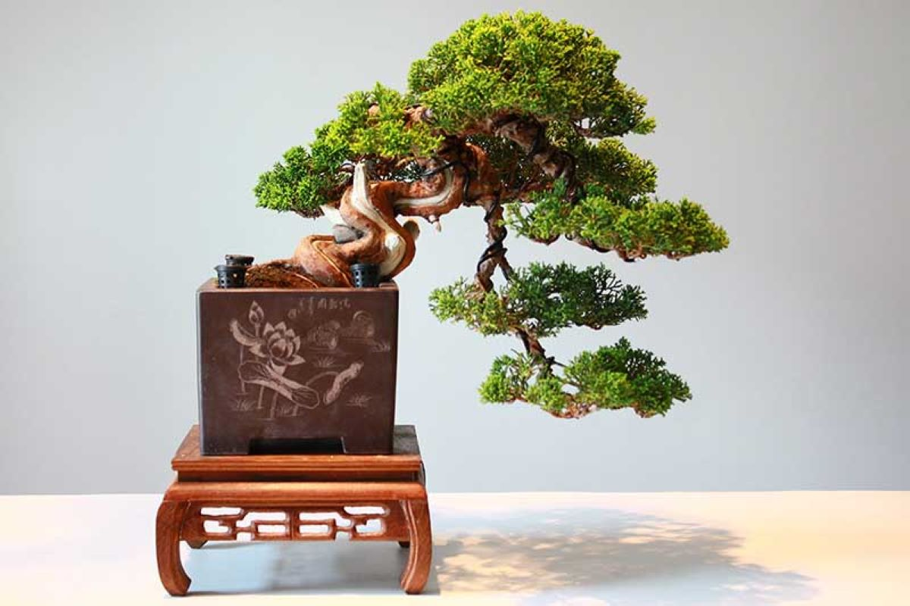
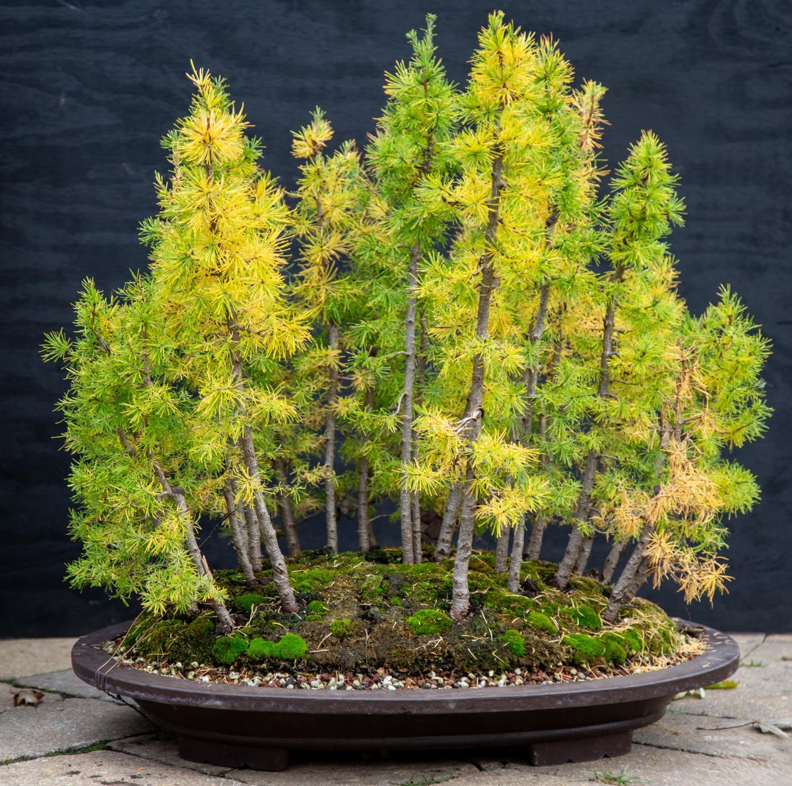

Bonsai Styling
Bonsai styling reflects how trees grow and survive in nature. Each style is inspired by environmental forces such as wind, gravity, and age. Styling helps give structure and intention to a bonsai while preserving a natural appearance.
Principles of Bonsai Design
Bonsai design emphasizes balance, movement, and proportion. The goal is not to force a tree into a shape, but to guide its growth in a way that feels organic and believable.
Branch placement, trunk movement, negative space, and pot selection all contribute to the final composition.
Common Bonsai Styles
Formal Upright (Chokkan)
This style features a straight, vertical trunk with evenly spaced branches. It represents strength, stability, and maturity. Formal upright bonsai are often seen in nature where trees grow with minimal environmental stress.
Informal Upright (Moyogi)
Informal upright trees have gentle curves in the trunk while still growing upward. This style is one of the most common and beginner-friendly, as it mimics how many trees naturally grow.

Slanting (Shakan)
The slanting style suggests a tree that has been shaped by strong winds or uneven terrain. The trunk grows at an angle, while branches balance the composition.
Cascade (Kengai)
Cascade bonsai grow downward over the edge of the pot, resembling trees found on cliffs or steep slopes. This dramatic style requires careful wiring and long-term planning.
Forest Planting (Yose-ue)
Forest plantings consist of multiple trees arranged in a single container. The composition creates depth and perspective, simulating a miniature forest landscape.
Choosing a Style
Beginners should choose styles that complement the tree's natural growth. Informal upright and slanting styles are often the easiest to maintain. As experience grows, more complex styles such as cascade or forest plantings become more approachable.